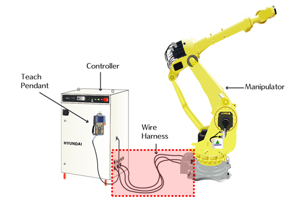

1.1.10.1. Outline
The servo board did not receive the data from the absolute encoder. The data of the absolute encoder are received twice when the power of the controller is turned on and when the motor is turned on for the first time. The E0103 error is detected only when the power is turned on and when the motor is first turned on. However, a new error may be detected when the CPU board is rebooted and initialized for another problem.
1.1.10.2. Causes and checking methods
1. Check the encoder supply voltage.
The power supply voltage to the encoder must be in the range of 5 V ± 5% (4.75–5.25 V) – (encoder side connector's supply voltage). If the voltage is reduced to below 4.75 V, the encoder may not operate normally, and it will cause this error.
Please measure the voltage of the encoder side's connector pin (G-H).
Figure 5.21 How to measure the input power of the encoder
If the measured voltage is lower than the reference voltage, turn the +5V ADJ(E) voltage control terminal of the power supply of the encoder to adjust the voltage of the encoder-side connector within the reference voltage.
Figure 5.22 How to adjust the power of the encoder
2. Check if the motor brake is released.
With the motor turned off, trigger the brake switch of the BD461 sequence board to see if the motor brake is released. The robot axis will fall if the brake is released so take necessary precaution and press and release the brake switch quickly to minimize falling of the robot axis.

Figure 5.23 Exterior of BD461 board
TSW03 : Forced output of the main axis (1, 2, and 3) brake release power
TSW04 : Forced output of the wrist axis (4, 5, and 6) brake release power
TSW05 : Forced output of the additional axis (7) brake release power
TSW06 : Forced output of the additional axis (8) brake release power
3. Replace the servo board and then test it.
After the replacement of the Servo board, if the error does not persist, the Servo board is faulty. Please replace the Servo board with a new one.

Figure 5.24 How to replace the BD540 servo board
4. Replace the motor and then test it.
If the error does not persist after the replacement of the Servo motor, the Servo motor is faulty. Please replace the Servo motor with a new one. The diagram below describes the locations of each axis' motor (HX165 robot). For other robots, please refer to the robot's maintenance manual to replace them.
Figure 5.25 Locations of each axis' motor (HX165 robot)
5. Please examine the wiring.
Encoder's wiring examination orders are as below.
First, examine the loose contact of connectors that are related to the encoder's wiring.
Second, examine the short-circuit of the encoder's wiring. Please use equipment, such as a multimeter (tester), and examine each phase's wiring one by one.
Third, replace the encoder's wiring and test it.
If the encoder's wiring has not been disconnected, and if the error caused by certain problems (loose contact of the shield line, a contact between the encoder's signal line and other electric power line, or a contact with the metal part of the robot's main frame), it cannot be detected through a short-circuit test. Please replace the wiring and test it.
1) Check the internal wiring of the controller.
¡á Please examine the wiring between the CNEC1 and 2 (BD540) connectors, and the SMPS(P5E, M5E).
¡á Please examine the wiring between the CNEC1 and 2 (BD540) connectors, and the CNR4.

Figure 5.26 Controller internal encoder wiring
2) Please examine the wiring between the controller and the robot.
¡á Please examine the wiring between the CNR04 and the CNR4.

Figure 5.27 Basic installation diagram between the robot and the controller.

Figure 5.28 Connection between the robot's main frame and the controller
3) Examine the wiring of the main frame.
¡á Please examine the wiring between CER1 and CNE1–6 (encoder side's connector).
Please refer to the wiring diagram of the robot's maintenance manual.

Figure 5.29 Robot's internal wiring